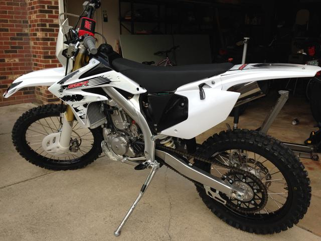

{kind=link}


Information about these bikes is somewhat hard to come by; despite their low price, and although the pit bikes seem to sell pretty well, I'm the only person I know who actually owns an SR250S
I expect to get a lot details wrong on this page and I count on readers who know more than I do to set me straight. Please, if you have corrections or additional information for the page, email it to me at gooseyard@gmail.com.
In Europe, Borossi distributes the bikes, now under the Asiawing brand.
The SR250S is patterned on the 2007 model year CRF250X. In most cases, parts for that bike will fit the SR250S.
This engine is also used in a number of other Chinese motorcycles and scooters, perhaps most notably the Zongshen RX-3 adventure-touring bike, which is distributed in the United States by the California Scooter Company.
Parts for this motor are plentiful and relatively cheap if you don't mind having them shipped from abroad.
http://www.aliexpress.com/store/group/NC250-Parts/207293_251843072.html
Another option is to purchase parts from CSC for the RX-3:
http://www.cscmotorcycles.com/OEM-ENGINE-COMPONENTS-s/239.htm
I sent an inquiry to a representative at Sunworld Moto about the availability of a jet kit for this carb. Sunworld replied immediately that this carb is made exclusively for the NC250, and that my distributor would handle parts for it. I spoke to a representative at SSR, who informed me that a jet kit for a CRF250X would fit the SWR carb, but I have yet to try this.
After studying the Zongshen and Asiawing manuals, it was clear that I should be using higher octane fuel. After draining and refilling the tank with 93 octane pump gas and setting the air screw back to two turns, the bike starts immediately and runs flawlessly. I didn't notice audible pinging with the 87 octane gas, but I did get a lot of stuttering above 1/4 throttle, which I don't get with 93.
I've resprung mine with a 66 N/mm Öhlins spring (06310-17), which Öhlins lists as a KYB replacement spring.
Also according to Borossi, the front suspension is an 47mm Upside-Down FastAce Performance fork; rebound and compression adjustable
You can remove the rear shock fairly easily using this method, which involves removing the pipe and unbolting the subframe, without having to remove the airbox. I recommend loosening the pipe clamp by the carb outlet, and have some (I used zip ties) to support the subframe while the shock is out.
The stock handle bar is tapered from 1.125" to 0.875" (1 1/8 to 7/8)

The shifter is of the folding design, similar to the CRF250X pattern, but I haven't compared them.
Length is about 5" from the front edge to the center line of the shifter shaft, which I measured as 0.425" (10.8mm?). I crudely measured this without detaching the shifter. If you are looking for this measurement let me know, I'll take it off and get a more accurate measure.